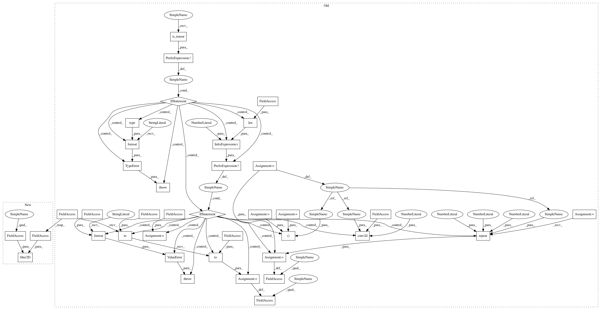

b9088d6735e94b600ab9f1e42f6f7aa56eafa96f,kornia/filters/laplacian.py,Laplacian,forward,#Laplacian#Any#,127
Before Change
return computed
def forward(self, x: torch.Tensor): // type: ignore
if not torch.is_tensor(x):
raise TypeError("Input x type is not a torch.Tensor. Got {}"
.format(type(x)))
if not len(x.shape) == 4:
raise ValueError("Invalid input shape, we expect BxCxHxW. Got: {}"
.format(x.shape))
// prepare kernel
b, c, h, w = x.shape
tmp_kernel: torch.Tensor = self.kernel.to(x.device).to(x.dtype)
kernel: torch.Tensor = tmp_kernel.repeat(c, 1, 1, 1)
// convolve tensor with gaussian kernel
// TODO: Filter2D convolves an image with the kernel. A wrapper fucntion
// for conv2d something similar to the one
// given in OpenCV. Also see separable filters.
// https://github.com/opencv/opencv/blob/7fb70e170154d064ef12d8fec61c0ae70812ce3d/modules/imgproc/src/deriv.cpp//L822
return conv2d(x, kernel, padding=self._padding, stride=1, groups=c)
////////////////////////////////////////////
// functional interface
After Change
get_laplacian_kernel2d(kernel_size), dim=0)
def forward(self, input: torch.Tensor): // type: ignore
return kornia.filter2D(input, self.kernel, self.border_type)
////////////////////////////////////////////
// functional interface
In pattern: SUPERPATTERN
Frequency: 3
Non-data size: 38
Instances
Project Name: arraiy/torchgeometry
Commit Name: b9088d6735e94b600ab9f1e42f6f7aa56eafa96f
Time: 2019-06-25
Author: edgar.riba@gmail.com
File Name: kornia/filters/laplacian.py
Class Name: Laplacian
Method Name: forward
Project Name: arraiy/torchgeometry
Commit Name: b9088d6735e94b600ab9f1e42f6f7aa56eafa96f
Time: 2019-06-25
Author: edgar.riba@gmail.com
File Name: kornia/filters/laplacian.py
Class Name: Laplacian
Method Name: forward
Project Name: arraiy/torchgeometry
Commit Name: b51bfe75d02eeab204501f2695845ff28f4a87c2
Time: 2019-06-25
Author: edgar.riba@gmail.com
File Name: kornia/filters/gaussian.py
Class Name: GaussianBlur2d
Method Name: forward
Project Name: arraiy/torchgeometry
Commit Name: 3e712226e0a74436c9e1bf12ddf15b5d4d6acdae
Time: 2019-06-25
Author: edgar.riba@gmail.com
File Name: kornia/filters/blur.py
Class Name: BoxBlur
Method Name: forward